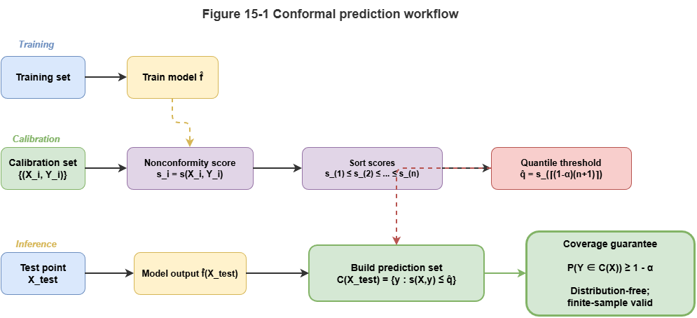
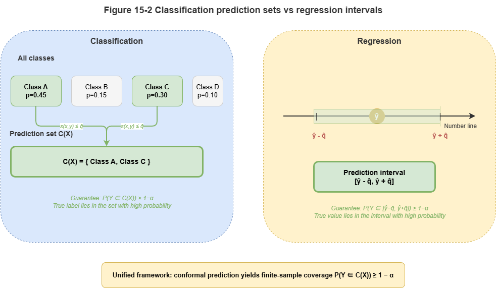
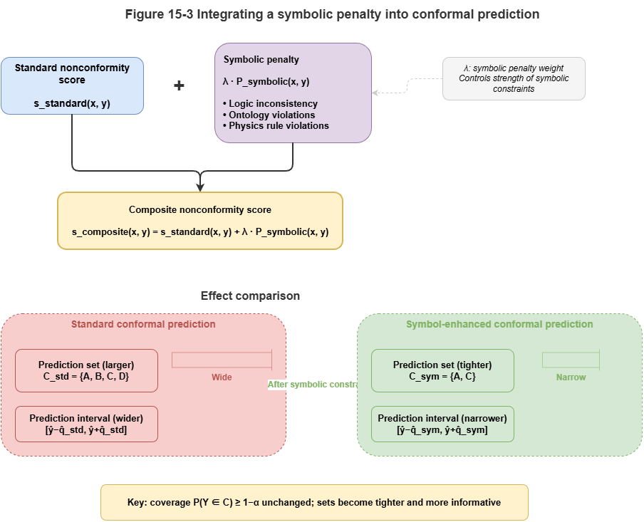

The previous chapter dissected the trustworthiness crisis of neuro-symbolic systems in safety-critical settings and clarified that explainability is not certifiability. To qualify for airworthiness or deployment, we must move from classical point prediction to interval prediction with rigorous statistical guarantees. This chapter introduces conformal prediction (CP) and systematically discusses calibrating model uncertainty so that black-box or gray-box outputs carry mathematically valid coverage guarantees.
15.1 Types of Uncertainty: Epistemic vs. Aleatoric#
Before calibrating outputs, we separate two sources of uncertainty:
Aleatoric uncertainty (data uncertainty): Inherent, irreducible noise in the physical world—e.g., sensor error (ADS-B, radar), sudden wind shear in low-altitude traffic. This is an intrinsic property of the system and cannot be removed by more training data.
Epistemic uncertainty (model uncertainty): The model “does not know enough” about the observed scene—e.g., it trained only on multirotor UAVs and then sees a novel eVTOL. Lacking data, it cannot be sure of its prediction. This uncertainty can be reduced by more relevant data or richer prior knowledge in the graph.
In neuro-symbolic systems, symbolic rules often handle cases with clear epistemic boundaries; uncontrollable aleatoric noise and unknown blind spots require probabilistic methods to quantify and isolate.
15.2 Why Probability Outputs Are Not Trustworthy Confidence#
In deep learning, Softmax outputs are often read as probabilities: “collision probability 0.99” feels highly confident. Modern networks, however, are widely overconfident.
Large capacity plus techniques such as batch normalization and weight decay encourages overfitting to labels: even when wrong, Softmax values are often near \(1.0\). Empirical accuracy and reported probabilities decouple (miscalibration).
In low-altitude collision avoidance, feeding such uncalibrated “pseudo-probabilities” into a symbolic decision engine is dangerous. We need to turn “what the model thinks is confidence” into reliably calibrated confidence.
15.3 Basics of Conformal Prediction#
Conformal prediction (CP) is a distribution-free method that, without assuming a specific model form or data law, yields valid prediction sets or intervals for arbitrary predictors.
Its main assumption is exchangeability: train and test data are drawn from the same distribution (in the usual i.i.d. setting, exchangeability holds).
Basic pipeline (split conformal prediction):
Calibration set: Hold out an independent calibration set \(D_{cal} = \{(X_i, Y_i)\}_{i=1}^n\) unseen by the fitted model.
Nonconformity score: Define \(s(X, Y)\) measuring how “strange” the pair is—higher means worse agreement with the model.
Quantile: Compute scores on the calibration set, sort ascending, take the \(\lceil (n+1)(1-\alpha) \rceil\)-th as threshold \(\hat{q}\), where \(\alpha\) is the tolerated error rate (e.g., \(\alpha = 0.05\) for 95% confidence).
Prediction set: For test \(X_{test}\), try candidate labels \(y\); include \(y\) in \(C(X_{test})\) if \(s(X_{test}, y) \le \hat{q}\).
Conformal prediction guarantees \(P(Y_{test} \in C(X_{test})) \ge 1 - \alpha\).
15.4 Conformal Methods for Classification, Regression, and Set Prediction#
CP adapts to different tasks:
Classification (e.g., risk levels): Often \(s(x, y) = 1 - \hat{\pi}_y(x)\) with \(\hat{\pi}_y(x)\) the model’s class probability. For very small \(\alpha\) (e.g., \(0.01\)), CP may return a prediction set such as
{safe, caution}—acknowledging ambiguity and forcing worst-case conservative action.Regression (e.g., continuous trajectories): Often \(s(x, y) = |y - \hat{y}(x)|\). After calibration, output is a prediction interval \([\hat{y}(x) - \hat{q}, \hat{y}(x) + \hat{q}]\)—the envelope planners must respect.
15.5 Conformal Calibration for Graph and Temporal Models#
In dynamic low-altitude collaboration (Part IV of this book), GNNs and temporal knowledge graphs (TKGs) strain classical exchangeability:
Graph structure breaks spatial independence: Neighbor UAVs interact via message passing; predictions are dependent. Network conformal prediction reweights quantiles using local topology.
Time series break temporal independence: Trajectories are autocorrelated and subject to concept drift. Adaptive / sequential conformal prediction updates calibration and \(\hat{q}\) online from recent windows.
15.6 Designing Conformal Scores for Neuro-Symbolic Outputs#
Neuro-symbolic systems fuse prior knowledge and rules. The nonconformity score \(s(X, Y)\) should reflect both neural scores and SkyKG constraints.
A composite conformal score with symbolic penalty:
Here \(s_{neural}\) measures neural uncertainty; \(P_{symbolic}\) is large if candidate \(y\) violates hard physical rules or high-priority regulations in the graph (e.g., trajectory through a no-fly zone). Predictions that grossly violate domain knowledge are pushed out of the conformal set.
15.7 Risk Prediction Intervals and Coverage Guarantees#
CP moves neuro-symbolic systems from empiricism to formal statements. For UAM safety, CP provides marginal coverage:
If airworthiness requires miss rate below \(10^{-4}\), set \(\alpha = 10^{-4}\). Tighter safety yields wider sets in ambiguous scenes and more conservative avoidance—but the statistical promise is explicit.
CP supplies a quantifiable “confidence certificate” and aligns outputs with aviation-style assurance discussions (e.g., DO-178C analogues). Chapter 16 turns to online drift monitoring.
15.8 Supplement: Conditional CP, Classical Calibration, Bayes, and Engineering Challenges#
15.8.1 Conditional conformal prediction#
Standard CP gives marginal coverage \(P(Y \in \hat{C}(X)) \ge 1 - \alpha\) averaged over \(X\). That can hide local under-coverage (e.g., rare weather) while being overly conservative in easy regimes.
Conditional conformal prediction targets finer guarantees:
Examples:
Mondrian conformal prediction: Partition inputs (e.g., vehicle type, airspace class); run CP separately per group with thresholds \(\hat{q}_k\).
Localized CP: Weight calibration points by proximity to the test point for local adaptation.
For safety-critical certification, worst-case subpopulations matter more than global averages.
15.8.2 Classical calibration methods#
Post-hoc calibration alternatives include:
Temperature scaling: Divide logits by learned scalar \(T\) before Softmax.
Platt scaling: Fit \(\sigma(aZ + b)\) on logits.
Isotonic regression: Nonparametric monotone mapping when data are ample.
These improve expected calibration error (ECE) but only retune point probabilities—they lack finite-sample coverage guarantees like CP. In strict certification, treat them as adjuncts, not replacements.
15.8.3 Bayesian approaches to uncertainty#
Bayes tracks epistemic uncertainty via \(p(\theta \mid D)\). Examples: BNNs, MC Dropout, deep ensembles (spread as uncertainty).
Priors and approximations matter; cost is high. CP needs only exchangeability and is distribution-free—often more actionable and auditable for certified safety engineering.
15.8.4 Engineering challenges for CP#
Calibration set size: Extreme coverage (\(1 - \alpha = 0.9999\)) may need very large calibration data.
Cost of prediction sets: Enumerating candidates in huge label or trajectory spaces may require pruning or approximation.
Coverage vs. set size: Stricter coverage widens intervals or sets; balance “sufficient coverage” with operational decisiveness.
Chapter Summary#
This chapter connects conformal prediction and uncertainty calibration: how neuro-symbolic systems turn empirical probabilities into trustworthy statistical bounds. We distinguished aleatoric vs. epistemic uncertainty; showed Softmax is not calibrated trust; described calibration sets, nonconformity scores, and quantile thresholds for sets/intervals; extended to graphs and time via network and adaptive CP; and unified neural and rule violations via composite scores for certifiable risk intervals.
Key Concepts#
Uncertainty calibration: Aligning stated confidence with true error rates.
Conformal prediction: Distribution-free coverage for arbitrary predictors.
Nonconformity score: Core measure of prediction strangeness.
Prediction set / interval: Typical CP outputs for classification vs. regression.
Composite conformal score: Joint neural deviation and symbolic rule violation.
Exercises#
Why should calibrated probabilities precede safety-critical decisions?
How do graph and temporal models challenge classical CP assumptions?
What does adding a rule penalty to the conformal score buy in neuro-symbolic systems?
Case Study#
Multi-vehicle conflict interval calibration: the same risk predictor gives sharp but unreliable point probabilities before calibration; after CP, risk sets or safe envelopes illustrate the trade-off between statistical coverage and operational conservatism.
Figure Suggestions#
Figure 15-1: Flow from train/calibration/test in split conformal prediction.

Figure 15-2: Prediction sets vs. prediction intervals.

Figure 15-3: Effect of symbolic penalty on conformal score boundaries.

Formula Index#
Nonconformity score: \(s(X, Y)\)
Quantile threshold: \(\hat{q} = \mathrm{quantile}(s_1, \ldots, s_n,\; 1 - \alpha)\)
Coverage: \(P(Y_{\mathrm{test}} \in \hat{C}(X_{\mathrm{test}})) \ge 1 - \alpha\)
Composite score: \(s(x, y) = s_{\mathrm{neural}}(x, y) + \lambda\,P_{\mathrm{symbolic}}(x, y)\)
References#
Vovk, V., Gammerman, A., & Shafer, G. (2005). Algorithmic Learning in a Random World. Springer.
Romano, Y., Patterson, E., & Candès, E. (2019). Conformalized Quantile Regression. Advances in Neural Information Processing Systems (NeurIPS).
Angelopoulos, A. N., & Bates, S. (2023). Conformal Prediction: A Gentle Introduction. Foundations and Trends in Machine Learning, 16(4), 494–591.
Papadopoulos, H., Proedrou, K., Vovk, V., & Gammerman, A. (2002). Inductive Confidence Machines for Regression. Proceedings of the European Conference on Machine Learning (ECML).
Guo, C., Pleiss, G., Sun, Y., & Weinberger, K. Q. (2017). On Calibration of Modern Neural Networks. Proceedings of the 34th International Conference on Machine Learning (ICML).
Barber, R. F., Candès, E. J., Ramdas, A., & Tibshirani, R. J. (2023). Conformal Prediction Beyond Exchangeability. Annals of Statistics, 51(2), 816–845.
Lei, J., G’Sell, M., Rinaldo, A., Tibshirani, R. J., & Wasserman, L. (2018). Distribution-Free Predictive Inference for Regression. Journal of the American Statistical Association, 113(523), 1094–1111.